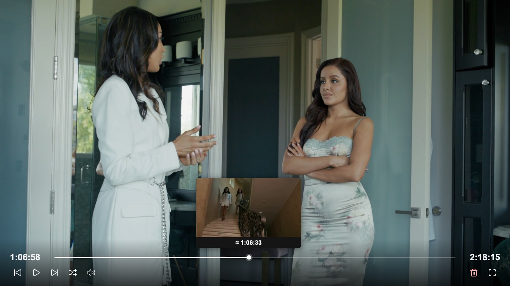
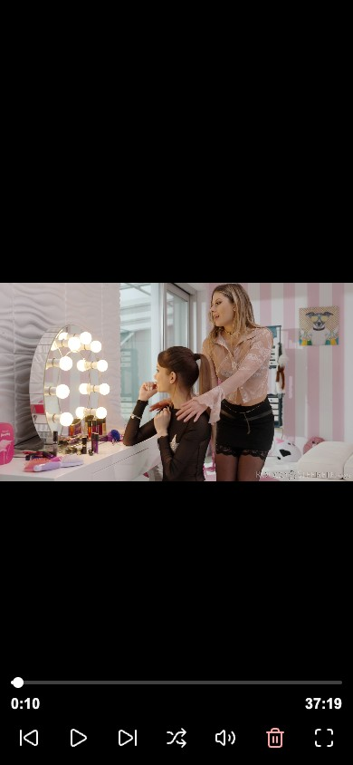

By quietframe-player
Stash TV
Just press play.
A lightweight player for your Stash library.
Made for smart TV browsers, phones, and desktops.
v{{VERSION}} Stash v0.31.1+
Less to load. More to watch.
Built for the
big screen.
Smart TV browsers can struggle with the full Stash interface. Stash TV opens a small, standalone player using your existing Stash streams.
Single video or a seamless two- or four-video grid. Compact controls. No separate server.
- See where you're going.
- Frame previews on the seek bar, with your existing scene markers at the right timestamps.
- Pick up where you left off.
- Playback positions stay in Stash. Move through a shuffled queue without reopening the full interface.
- Use what's in your hand.
- TV remote, keyboard, mouse, or touch. The controls stay small and get out of the way during playback.
Familiar controls
TV. Phone.
Your way.
Tap to pause. Seek with a double tap. Hold for 2× speed. Swipe to the next scene.
Touch
- Tap the video
- Play / pause
- Double-tap left / right
- Seek −10s / +10s
- Hold during playback
- Temporary 2× speed
- Swipe up / down
- Next / previous scene
- Zoom button
- Fill screen / fit video
- Drag left / right in Fill
- Pan the cropped video
- Speaker button
- Volume / mute
Keyboard
- Space
- Play / pause
- Enter
- Fullscreen
- A / D or ← / →
- Seek −10s / +10s
- Shift + A / D
- Seek −60s / +60s
- 0–9
- Jump to 0%–90%
- W / S
- Volume up / down
- F / Shift + F
- Next / previous scene
- ↑ / ↓
- Next / previous with a vertical transition
- R
- Random scene
LG remote
- Red / blue
- Previous / next scene
- Green
- Random scene
- Yellow
- Play / pause
- Left / right
- Seek −10s / +10s
- OK
- Fullscreen

Add the plugin source
Install Stash TV.
Free and open source.
Requires Stash v0.31.1 or later.
- Open Settings → Plugins → Available Plugins → Add Source.
- Name it Stash TV and paste this source URL:
{{SOURCE_URL}}
- Refresh the available plugins, then install Stash TV.
- Reload Stash. Open the player with the TV icon in the top navigation.
On a scene page, the TV icon opens that scene. Elsewhere, it starts a shuffled queue.